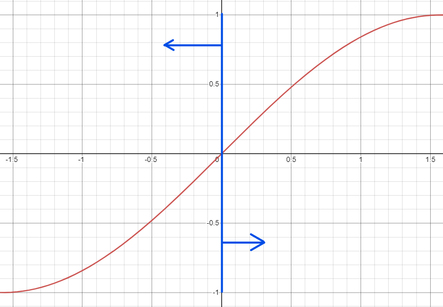

Animations & Models
In DigiPen's Senior courses, I took CS460 classes for animation and modeling.
Animations
In order to implement the animation player in the video, I learned Quaternion. It used because it works better with interpolation, doesn't cause gimbal lock problem, and works VQS concatenation.
Quaternion does not contain rotation information itself, but it does when the quaternion is {sin(a/2) * [x, y, z], cos(a/2)} when [x,y,z] is rotation axis, and a is the angle.
Moreover, I could study structure of animation information. Animation consists of tracks. Track is a collection of key frames of a mesh. For example, the model is a simple robotic arm consists of three parts. Then, the animation would have three tracks. Key frames are a sequence of critical point of the animation. For example, there will be three key frames(initial key frame, grab key frame, release key frame) if the animation is grabbing something. Intermediate transformations will be interpolated of the critical key frames.
Arc Length and Speed Control
When the model has curves to walk along, the model walks smoothly the curve.
The curve is generated along the Bezier curve at the given positions. Once upon they created, arc length table will be constructed to keep information of the curve. (The arc length table will contain where the model will be at the given time.)
Once the table constructed, I have a control of the model. In the video, I applied easy-in/easy-out speed to simulate natural movements.
As you may see, the since wave in the range of [-pi/2 : pi/2] is used for an easy-in/easy-out distance-time function for its "zero tangent slope". Thus, I used sine of [-pi/2 : 0] to acceleration part and sine of [0, pi/2] to deceleration part. It would be easily observed if you focus on the velocity located at right top corner.
Inverse Kinematics
Inverse kinematic represents moving model parts by given position. There are three solutions.
The first solution is Close Form Solution. It is an analytic method that calculates solutions by resolving a set of algebraic or geometric equation. It is easy in a simple situation. However, it became too difficult under the complex situation. For example, three or more links to the endeffector emerged in the situation. Complecity enlarges.
The second solution is Jacobian Matrix Solution. It takes the partial derivatives of forward equation with respect to time to obtain Jacobian matrix, then use an integral algorithm to resolve.
The final solution is Cyclic-Coordinate Descent Solution. It is the most practical method among the solutions. It rotates the final link to the destination and rotate the parent link and over again until the end effect directs the destination or it produce valid rotation.
RigidBody Simulation
RigidBody Simulation move objects by linear and angular forces. It will affect momentums and velocities then finally at positions.
I Spring-mass-damper system to simulate elastic object.
There are only gravity force for the external forces.